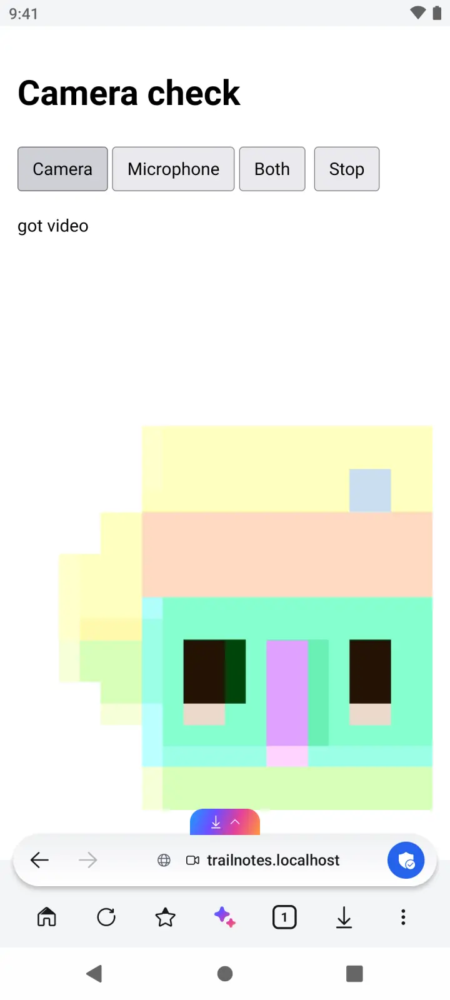
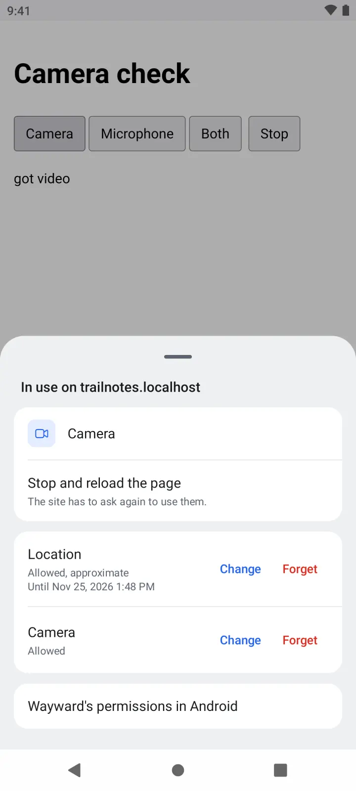
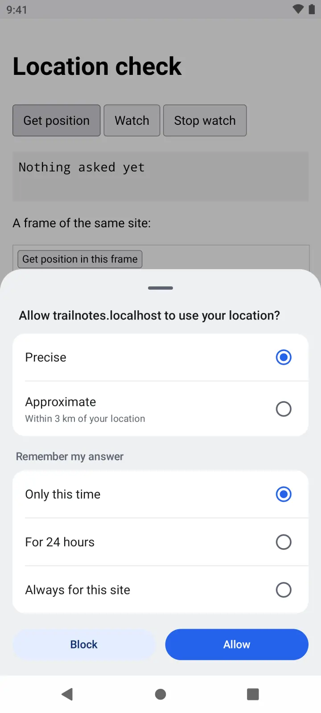

Camera, notifications and other site permissions
How-to
Sites need your permission to use your camera or microphone, send notifications or play protected video. Wayward shows each question with the site's name, so you know who's asking.
Camera and microphone
A site that wants them asks in a sheet: "Allow example.com to use your camera and microphone?" (or just the camera, or just the microphone). Under Remember my answer, pick Only this time (until the tab leaves the site), For 24 hours or Always for this site, then Block or Allow. Allow works after a moment's pause, so a page can't trick you into tapping it. The camera and the microphone are remembered each on its own: a site you let use the camera asks again if it wants the microphone too. A remembered Allow is given only while you can see the page: Wayward in front, the page on screen, and not under the Tabs screen or the start page. A page that asks at any other moment is refused without a question, and can ask again once you're back. In a private tab or a link preview the sheet says Allowed until tab closes. Does not save setting, and your answer holds until that tab or preview closes, never saved. A frame from another site inside the page (a video call built into a news page, say) asks every time: the sheet names the frame's site, says "Asked from inside a page on" and the tab's site, "Allowed this time only. Does not save setting", and nothing is remembered, so a page can't use a site's answer by putting that site inside it. The first time, Android also asks whether Wayward itself may use the camera or microphone.
While another app draws over Wayward (a screen-dimming app, a chat bubble), this Allow doesn't take a tap, and neither do the ones for notifications and protected video. Wayward says Another app is drawing over Wayward. Close it and tap again.

While a site is using your camera or microphone, a small camera or microphone shows in the address field, before the site's name, in every bar layout, and in the slim line at the top or the strip at the bottom when the bars have moved away. With Full screen pages on, a page has the whole screen once the bars have gone, so it shows again when they come back; on Android 12 and later the phone's own dot for the camera or microphone shows meanwhile. It stays about 4 seconds after the site stops, so even a quick use is seen. TalkBack reads it as In use: Camera, Microphone. Tap it to see "In use on" and the site's name: what it uses, Stop and reload the page (the site has to ask again to use them: a remembered Allow for them is forgotten, and so is any answer for this time in that tab, a frame's too), the site's other answers, and Wayward's permissions in Android. A tab using the camera or microphone also keeps its page open, however low memory runs.


Only the tab on screen can ask, and a locked tab can't. Sites can't share your screen.
Location
A site that wants to know where you are asks in a sheet: "Allow example.com to use your location?". Pick:
- Precise: your position as your phone knows it.
- Approximate (the sheet says Within 3 km of your location): rounded to about 3 km, and the same answer while you stay in that area, so the site can't work out the exact spot by asking again and again. Wayward does the rounding on your phone, before the site gets anything. The first time, the page reloads to use it.
Under Remember my answer, pick Only this time (until the tab leaves the site), For 24 hours or Always for this site. Then tap Block or Allow; Allow works after a moment's pause, as the camera's does, and doesn't take a tap while another app draws over Wayward. In a private tab the sheet says Allowed until tab closes. Does not save setting: your answer holds for that site until you close the tab, wherever the tab goes meanwhile, and is never saved.

The first time you allow a site, Android asks whether Wayward itself may use your location (precise or approximate, as you picked). If Android gives Wayward only your approximate location, a site you chose Precise for gets the approximate one instead, rounded to about 3 km, and Wayward says so. If Android says no, the site doesn't get your location.
Only the tab on screen can ask, and a remembered Precise or Approximate answer is given only while you can see the page (Wayward in front, the page on screen, not under the Tabs screen or the start page). A page that keeps following your position (a map's live location) gets nothing new while its tab is behind another, Wayward shows another screen, or another app is in front; it picks up again with the next position once you're back. One thing to know: while such a page stays open in a tab behind, Android may keep finding your location for Wayward, which uses battery, even though the page gets nothing, until you close that tab or leave its site. An Approximate site's answer stays the same for 10 minutes at a time, so even while you travel a site can't tell the moment you crossed from one area into the next. A link preview or a web app's window never gets your location. On an Approximate site, frames from other sites inside the page are refused, and a site that checks its permission first is told it may ask, not that it's blocked. A site can still guess roughly where you are from your IP address, as with any browser.
Notifications
A site that wants to send notifications asks "Allow example.com to send notifications?". Your answer is remembered: Allow or Block, as you tap it. Closing the question, or a question that couldn't be shown (another tab on screen, another question open), isn't kept: the site can ask again. Notifications from sites you allowed show only while Wayward is running, and never from private tabs. They come in their own Android channel, Site notifications, and a tap opens Wayward. On the lock screen they just say A site sent a notification.
Wayward asks Android for its own notification permission only when it needs it: when you first allow a site to notify, or when your first download starts. If Android's notifications are off for Wayward, it tells you how to turn them on.
Protected video
Streaming sites protect their videos with DRM (Widevine), which your phone itself handles. A site asks the first time: "Allow example.com to play protected video?", and your answer is remembered for the site, so its other pages don't ask again. Closing the question isn't kept. To turn protected video off everywhere, see Settings > Video and audio > Play protected video.
Links that want to open an app
When a link on a page wants to open another app, Wayward asks first: "Open in" and the app's name, saying which site the link is on. Tap Open to go to the app, or tap outside the box (or press Back) to stay. From a private tab it reminds you that private browsing doesn't carry over to the app. To never be asked, see Links that open apps in the privacy settings.
See and change your answers
Open the ⋮ menu, then Settings > Site permissions. Under Notifications and Protected video, each site shows Allowed or Blocked (and which space you answered in). Under Location, each site shows Allowed, precise, Allowed, approximate or Blocked, until when ("Until" a date and time, for 24 hours), and the space; Change picks Precise, Approximate or Block instead. Camera and Microphone list the answers you asked Wayward to remember the same way, with Change (Allow or Block). Forget clears an answer, after asking "Forget" and the site's name (Keep or Forget), so the site asks again next time. When a change or Forget takes something away from a site (Precise to Approximate or Block, an Allow forgotten, or one for 24 hours that ends), its open pages reload, so a map following you or a camera that's on stops at once; any change to a location answer reloads them, so the page asks the new way. A section with no remembered answers says No sites yet. Clearing browsing data with its permissions choice, Shred and Emergency delete clear these answers too.

A site's answers are also on its shield sheet, each with Forget.
More in Privacy & security
- Lock Wayward down
- See what was blocked, and let a broken site through
- Choose how much Wayward blocks
- Hide pop-ups and overlays on pages
- Secure connections, Secure DNS and the other privacy settings
- Use private tabs
- Keep sign-ins apart with spaces
- Lock a tab, your private tabs, a space or Downloads
- Clear data, Shred a site, or delete everything